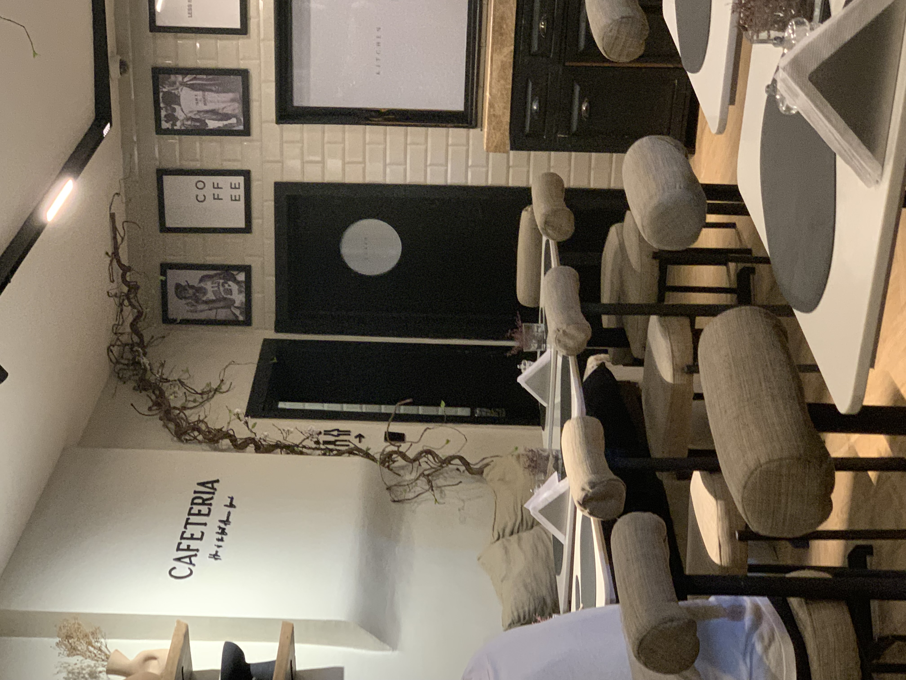
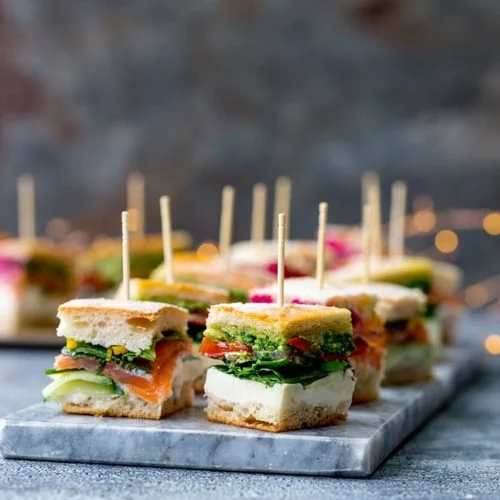

If Not Us, Who?
Grayham's Diner stands as the unrivaled beacon of culinary delight in Lagos.
Nestled in the heart of the bustling city, it's more than just a place to eat; it's an experience woven with the threads of tradition, flavor, and warmth. From the moment you step inside,
the aroma of sizzling spices and home-cooked goodness envelops you, promising a culinary journey unlike any other.What sets Grayham's apart is not just its delectable menu, bursting with
a fusion of local flavors and international twists,but also the unparalleled hospitality that greets every guest. The staff, with their genuine smiles and attentive service,
make you feel like family from the moment you walk through the door.Whether you're craving a comforting plate of jollof rice or yearning for a taste of their signature gourmet burgers,
Grayham's never fails to deliver. Each dish is crafted with care, using only the freshest ingredients sourced from local markets, ensuring every bite bursts with authenticity and flavor.
But perhaps what truly elevates Grayham's to legendary status is its ability to transcend the mere act of dining, transforming each meal into a cherished memory.
Whether it's a casual lunch with friends or a romantic dinner for two, every visit to Grayham's is an unforgettable experience, leaving you longing for more.In a city teeming with dining options,
Grayham's Diner reigns supreme, not just as a restaurant, but as an institution—a testament to the timeless allure of good food, good company, and good times.
APPETIZERS
-
Caprese Salad
Fresh tomatoes, mozzarella, and basil drizzled with balsamic glaze.
-
Mini Sandwhiches
Italian bread, Egg, and Fresh vegetables, Secret sauce
